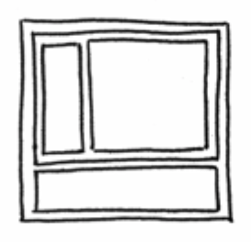

Core Lab Interaction
Homework #2 - Recreating a Mondrian
Create one webpage using HTML and CSS that recreates Piet Mondrian's "Composition II in Red, Blue, and Yellow" from 1930

Requirements
- The painting should be recreated entirely using <div> colored with CSS background-color.
- Some <div> will be container <div> that are invisible, but divide up space.
- Use % units, allow the painting to take up the full canvas of the HTML page, it’s okay if it appears stretched if the window is also stretched.
- Use CSS borders around the colored <div> to accomplish the black lines, this will put additional black lines around the outer boundary of the work, that is okay.
Helpful Hints
- The <body> tag should only need to contain <div> elements.
- Make sure borders are in the interior of the <div> { box-sizing: border-box; }
- The width and height math becomes much simpler if you only ever divide a <div> into 2 parts. Think about it this way: even 3 sections next to each other can be made by first dividing into 2, one large and one small. Then subdivide the large one into 2.
- If you follow the previous point, each nested layer should only be dividing up the space horizontally or vertically; never both directions within the same container. If this is happening you are needing more empty containers.
- I found it helpful to make this kind of diagram - illustrate all the container divs with a margin so that their space becomes obvious.

Submission
You will turn in your homework by submitting a pull request to our class github repository and adding your index.html file to the folder corresponding to your NetID under /homework/2/ (i.e. cli-2767.github.io/homework/2/jacobsom/).
Extra Credit
Get rid of the outer border, which requires specifically targeting the certain sides (top, left..) of a border.